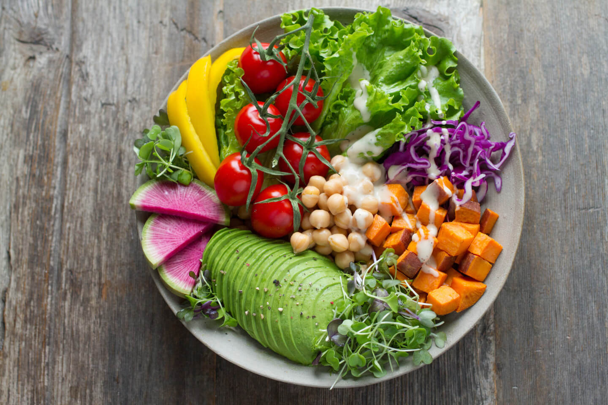

Espaguetis de calabacín con salsa marinara
Ingredientes
2 calabacines grandes
500 g de salsa marinara
1 cucharada de aceite de oliva
1 diente de ajo
Hojas de albahaca fresca
Sal y pimienta al gusto
Preparación
1.Con un espiralizador, convierte los calabacines en espaguetis.
2.Calienta el aceite en una sartén y sofríe el ajo picado.
3.Añade la salsa marinara y caliéntala a fuego bajo.
4.Incorpora los espaguetis de calabacín, mezcla y cocina 2-3 minutos.
5.Sirve con albahaca fresca.
Dificultad:fácil
Cocina:italiana
Vegetariana:sí
Anticáncer:moderado
Celiacos:sí
